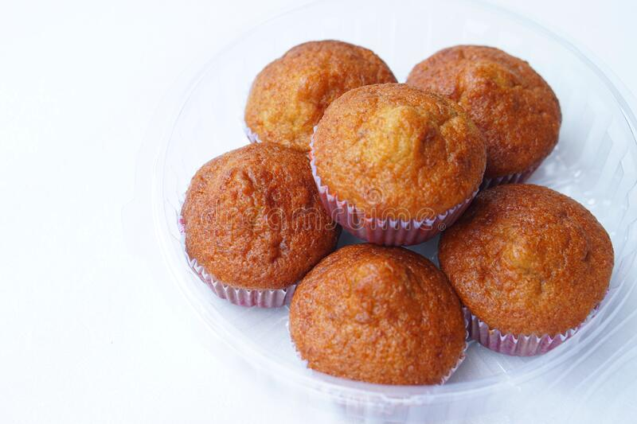

Thai Banana Cupcake

Description
The aroma of bananas wafting from the kitchen and into the hallway is one I remember fondly from my childhood.
These cupcakes are not only nostalgic for me, but they are fantastic for using overripe bananas.
Ingredients
- 6 ripe bananas
- 2 cups all-purpose flour
- 1 tsp baking soda
- 1 tsp baking powder
- 1 1/2 tsp cinnamon
- 1/2 cup sugar
- 1/2 cup oil
- 4 eggs
- 1/4 cup evaporated milk
Steps
- Mash the bananas to desired consistency. Set aside. (Note: I like to mash my bananas thoroughly until they're smooth and uniform without chunks.)
- Combine flour, baking soda, baking powder, and cinnamon in a big bowl.Set aside.
- Beat sugar, oil, and eggs.
- Beat in mashed bananas. Then add evaporated milk.
- Sift in dry mixture. Mix until just combined.
- Line 24 cupcake tins. Fill each cupcake 2/3 full.
- Bake at 325 degrees F for 15 to 20 minutes or until a wooden tester comes out clean.
Back to top of page
Home